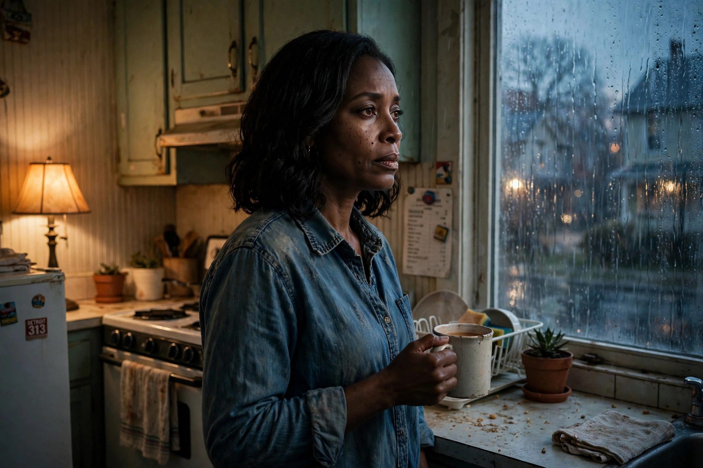
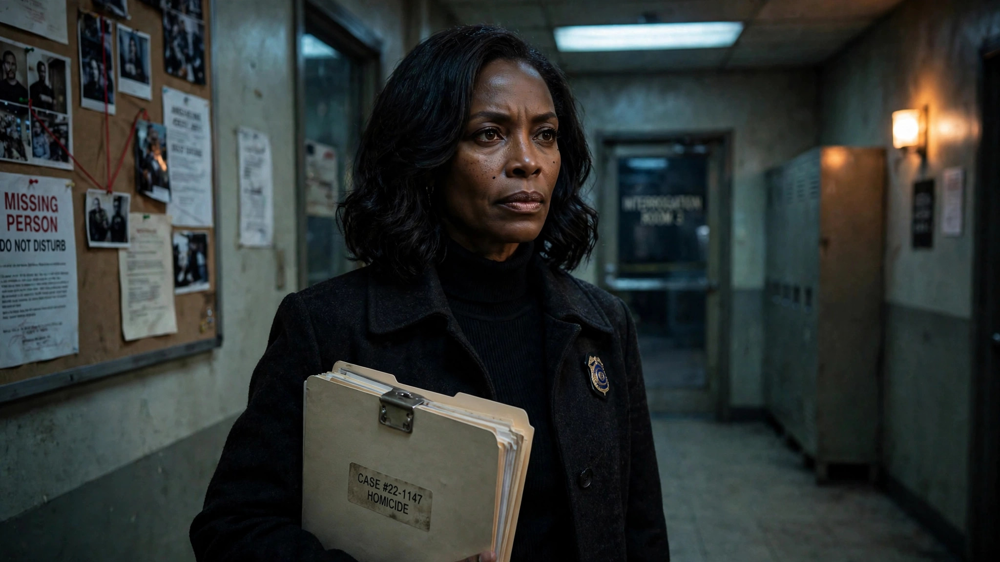
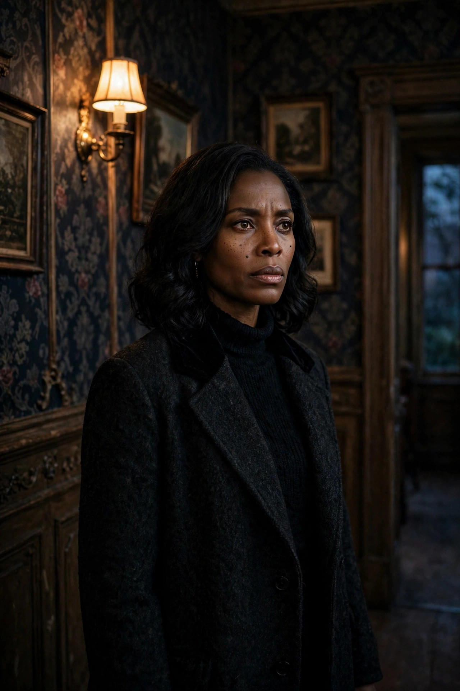
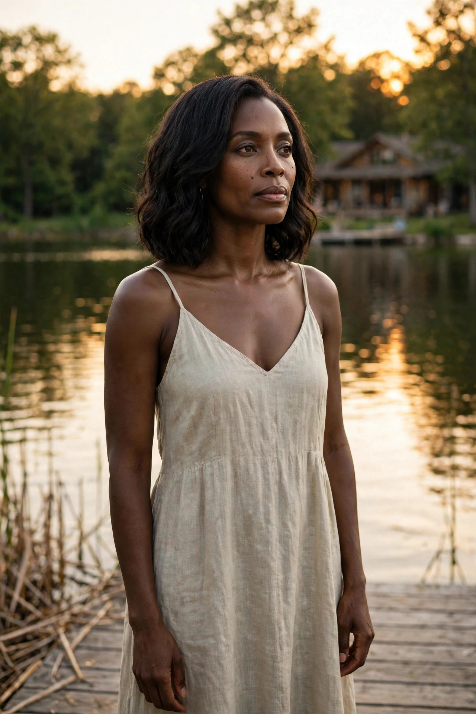
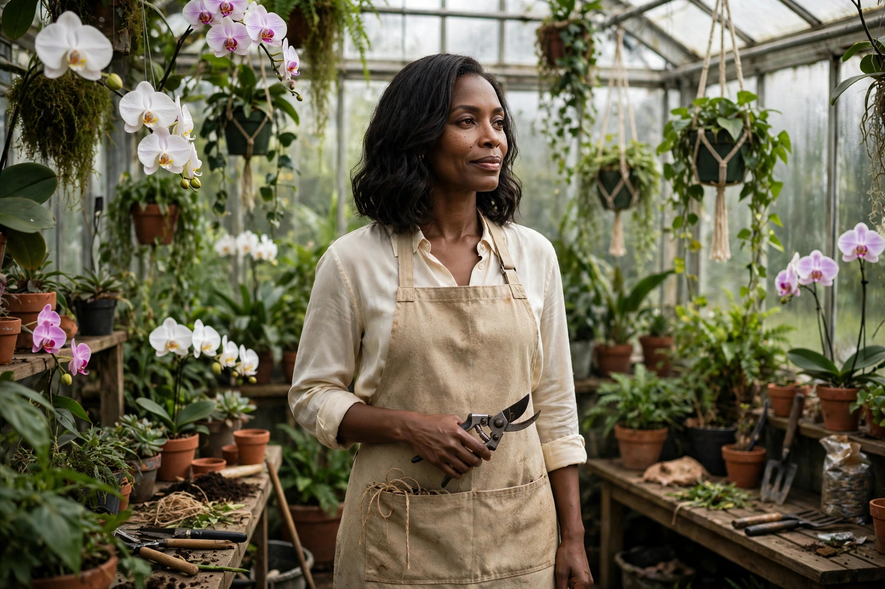
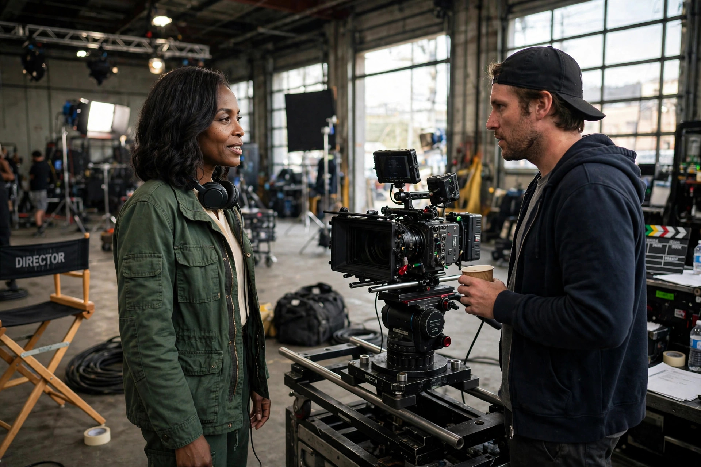
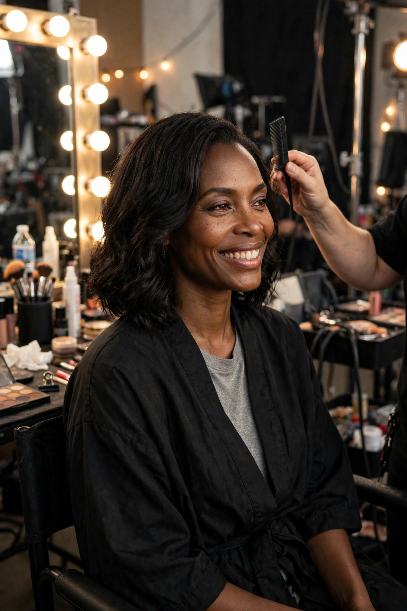
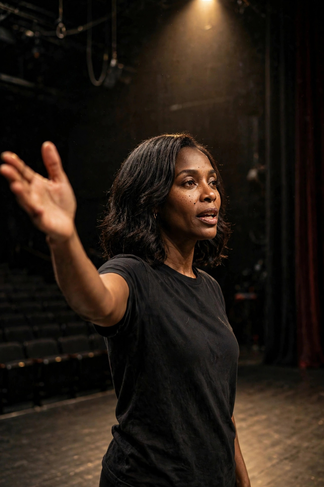
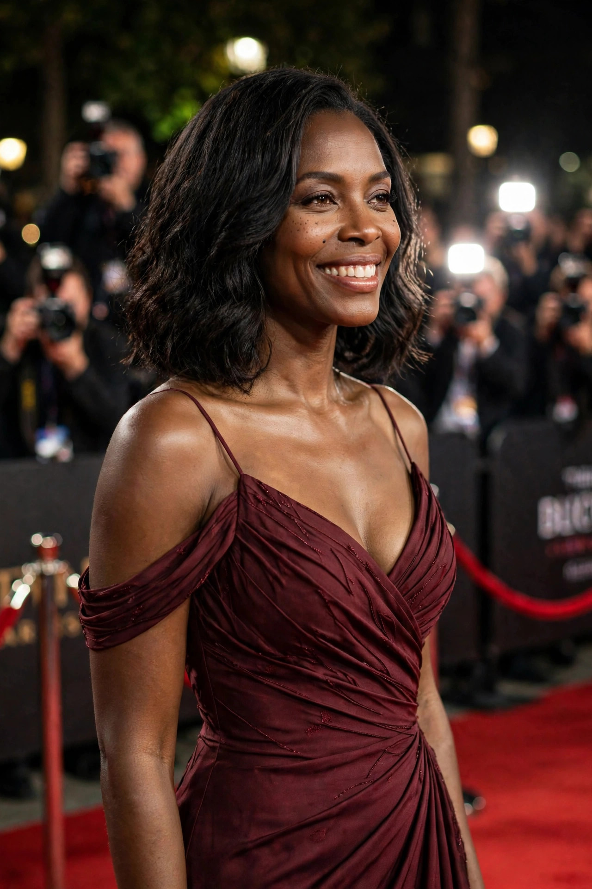

Winter Harbor
as Ruth Calloway
Lead role. Best Actress, Autumn Lights Film Festival 2026.
$4.2M box office, limited release
Detroit · Est. 2015
Actor. Producer.
Fourteen screen credits, three acting awards, and a career built between Detroit and Los Angeles. From a school play on the west side to a Best Actress win for Winter Harbor, Dana Cole brings the same patience to every role: the work comes first, the noise comes later.
2015 to 2026
Eight roles in pictures, newest first, with the numbers behind them. The full list of all fourteen credits is below.

as Ruth Calloway
Lead role. Best Actress, Autumn Lights Film Festival 2026.
$4.2M box office, limited release

as Detective Lena Brooks
Lead role. Filmed in Detroit over 31 days.
$18.6M worldwide box office
as Ada Whitfield
Lead role. Sang all six songs live on set.
$2.8M box office
as Mayor Evelyn Stone
Series regular, 3 seasons, 24 episodes.
Season 3 premiere: 2.1M viewers

as Naomi Carter
Lead role. Shot on location in Detroit.
$6.1M box office
as Pastor Elaine Morris
Supporting role. Motor City Arts Prize, 2022.
$1.9M box office
as Dr. Amara Okafor
Series regular, 2 seasons, 18 episodes.
1.4M viewers per episode

as June Parker
Lead role. Cole House Pictures, first production.
$3.4M box office
| Year | Title | Role | Type | Notes |
|---|---|---|---|---|
| 2026 | Winter Harbor | Ruth Calloway | Film | Lead role. Best Actress, Autumn Lights Film Festival 2026. |
| 2025 | The Mercury Room | Detective Lena Brooks | Film | Lead role. Filmed in Detroit over 31 days. |
| 2024 | The Last Set at the Blue Lantern | Ada Whitfield | Film | Lead role. Sang all six songs live on set. |
| 2024-2026 | The River Ward | Mayor Evelyn Stone | TV | Series regular, 3 seasons, 24 episodes. |
| 2023 | The House on Glynn Court | Naomi Carter | Film | Lead role. Shot on location in Detroit. |
| 2022 | After the Harvest | Pastor Elaine Morris | Film | Supporting role. Motor City Arts Prize, 2022. |
| 2022-2023 | The Third Floor | Dr. Amara Okafor | TV | Series regular, 2 seasons, 18 episodes. |
| 2021 | The Far Side of Summer | June Parker | Film | Lead role. Cole House Pictures, first production. |
| 2020 | Belle Isle | Sarah Whitmore | TV | Limited series, 6 episodes. 980K viewers per episode. |
| 2019 | Iron and Lace | Vivian Cross | Film | Supporting role. $5.7M box office. |
| 2018 | Eastside General | Nurse Tanya Reed | TV | Recurring role, 9 episodes. Season high: 1.1M viewers. |
| 2017 | North of the River | Officer Dana Reese | Film | Supporting role. $2.2M box office. |
| 2016 | The Winter Count | Mabel Turner | Film | Supporting role. $1.1M box office. |
| 2015 | The Carters of Custer Street | Denise Carter | Film | Feature debut. Independent film, Detroit. $0.4M box office. |
Combined box office across ten feature films: $46.4 million
Recognition
Three wins and three nominations across film and television, from a first prize in Detroit to a festival Best Actress in 2026.
Latest Project · In Theaters December 2026
A former prosecutor returns to her hometown on the Michigan shore to settle her late father's estate, and finds the lake, and the family, are not finished with her. Cole plays Ruth Calloway, a woman who left at eighteen and swore she would never come back.
The film premiered in October 2026 at the Autumn Lights Film Festival, where Cole won Best Actress. It was filmed in 28 days on location in Detroit and Traverse City, with a cast and crew that was more than half Michigan based.

Cole House Pictures · Expected Fall 2027
Cole plays Willa Hart, a greenhouse keeper in a small Michigan town who inherits her late aunt's orchid nursery, and the family secrets buried with it. A quiet drama about the things people grow and the things they hide.
Filming began in November 2026 in Detroit and Ann Arbor, with a 24-day shoot built around the seasons. Cole also produces through Cole House Pictures, her seventh production with the company.
Beyond the Screen
A production company, a skincare line, and a memoir. Each one started in Detroit, each one run the same way Cole runs a set: slowly, carefully, and with the right people.

Production Company · Founded 2021
An independent production company based in Eastern Market, Detroit. Cole House develops and produces films and series rooted in the Midwest, with a standing rule: every production hires at least half its crew from Michigan.
Six films produced since 2021, including The Far Side of Summer and Winter Harbor. The company also runs a paid summer internship for Detroit high school students interested in film work.
Skincare · Launched 2023
A four product skincare line built for long days under hot lights. Cole developed the formulas over two years with a Michigan chemist, after a decade of makeup chairs taught her what her skin actually needed.
The line is fragrance free, made in small batches, and sold online and at 14 independent boutiques across Michigan and Illinois. Five percent of profits fund the Detroit Youth Theatre Fund.
Memoir · Published March 2025
A memoir in 22 chapters, from a childhood on Detroit's west side to a career that took her to Los Angeles and back. Cole writes about the school plays, the lean years, the roles that got away, and the decision to build a life and a company in the city that raised her.
The book spent 11 weeks on the Detroit regional bestseller list and was a staff pick at bookshops across Michigan. The paperback includes a new afterword about filming Winter Harbor.
What They Say
“Cole gives the performance of the year, quiet and devastating in equal measure.”
“A masterclass in restraint. Dana Cole does not act a scene, she inhabits it.”
“Winter Harbor belongs to Cole from its first frame to its last.”
“The most reliable screen presence of her generation, and the most generous.”
On Screen and Off
Eight frames from the work, the premieres, and the days in between.



The Story
Dana Cole was born in 1984 and raised on Detroit's west side, near Grand River and Livernois, the oldest of three. Her first role came at nine, in a school production, and she never really stopped. By high school she was doing three shows a year and ushering at community theaters on weekends to watch the professionals up close.
She earned a BFA in Theatre from Wayne State University in 2006 and took her first professional role the next year, in a production of The Corner Store at the Westside Community Playhouse. The early years were lean: day jobs in restaurants and offices, night rehearsals, and a string of small parts in independent films shot around Michigan.
The move to Los Angeles came in 2011. Ten years, seven screen credits, and one long stretch of almosts later, she moved home. Detroit had changed, and so had she. In 2021 she founded Cole House Pictures in Eastern Market, with a simple idea: make the films she wanted to see, with the crews she grew up around.
She lives in Detroit with her husband and two children, serves on the board of the Detroit Youth Theatre Fund, and still ushers one show a year at the theater where she got her start.
See Her In Person
The Grand Riverview Cinema, Detroit, Michigan. Screening followed by a question and answer session with Dana Cole and director Samuel Okonkwo.
Dog Ear Books, Ann Arbor, Michigan. Signing and short reading from the memoir, with the paperback edition available.
Detroit Film Society Winter Summit, Detroit Public Library, Main Branch, Detroit, Michigan. A panel on building a production company outside Los Angeles and New York.
Eastern Market, Shed 5, Detroit, Michigan. The full skincare line, plus a limited winter set available only at the pop-up. Open until 2:00 PM.
Representation, interviews, and event requests are handled through Cole House Pictures in Detroit. Please allow two business days for a reply.
Cole House Pictures · Eastern Market · Detroit, Michigan
Follow Along
Social